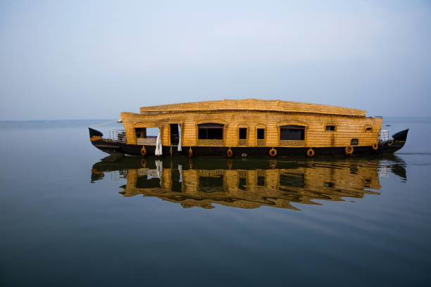

കേരളത്തിൻ്റെ ഹൃദയഭാഗത്ത് സ്ഥിതി ചെയ്യുന്ന കുട്ടനാട്, ആകർഷകമായ കായലുകൾക്കും അതിമനോഹരമായ കാഴ്ചകളും ശാന്തമായ അന്തരീക്ഷവും പ്രദാനം ചെയ്യുന്ന അതുല്യമായ ആവാസവ്യവസ്ഥയ്ക്ക് പേരുകേട്ടതാണ്. “കേരളത്തിൻ്റെ നെല്ലുപാത്രം” എന്നറിയപ്പെടുന്ന ഈ മനോഹരമായ പ്രദേശം സമൃദ്ധമായ നെൽവയലുകളും ശാന്തമായ കനാലുകളും ചുറ്റുമുള്ള ഭൂപ്രകൃതിയുടെ മനോഹാരിത പ്രതിഫലിപ്പിക്കുന്ന വളഞ്ഞ ജലപാതകളുമാണ്. കുട്ടനാട്ടിലെ കായലുകൾ കേവലം കണ്ണിന് വിരുന്ന് മാത്രമല്ല, പ്രാദേശിക സംസ്കാരത്തിൻ്റെയും സമ്പദ്വ്യവസ്ഥയുടെയും അവിഭാജ്യ ഘടകമാണ്, ഇത് പ്രകൃതിസ്നേഹികൾക്കും സഞ്ചാരികൾക്കും ഒരുപോലെ സന്ദർശിക്കേണ്ട സ്ഥലമാക്കി മാറ്റുന്നു.
കുട്ടനാടിൻ്റെ കായലുകളുടെ ഏറ്റവും ആകർഷകമായ വശങ്ങളിലൊന്ന് അവയുടെ പാരിസ്ഥിതിക വൈവിധ്യമാണ്. തനതായ പക്ഷി ഇനങ്ങളും മത്സ്യങ്ങളും ജലസസ്യങ്ങളും ഉൾപ്പെടെ വിവിധ സസ്യജന്തുജാലങ്ങളുടെ ആവാസ കേന്ദ്രമാണ് ജലപാതകൾ. ഒരു പരമ്പരാഗത ഹൗസ്ബോട്ടിൽ നിങ്ങൾ കനാലുകളിലൂടെ സഞ്ചരിക്കുമ്പോൾ, നിങ്ങൾക്ക് ഹെറോണുകൾ, കിംഗ്ഫിഷറുകൾ, താറാവുകൾ എന്നിവയെ കണ്ടെത്താനാകും, ഇത് ജീവിതത്തിൻ്റെ ഊർജ്ജസ്വലമായ ഒരു ചരട് സൃഷ്ടിക്കുന്നു. സമ്പന്നമായ ജൈവവൈവിധ്യം പ്രകൃതി ഭംഗി വർദ്ധിപ്പിക്കുക മാത്രമല്ല, പ്രദേശത്തിൻ്റെ പാരിസ്ഥിതിക സന്തുലിതാവസ്ഥ നിലനിർത്തുന്നതിൽ നിർണായക പങ്ക് വഹിക്കുകയും ചെയ്യുന്നു.
കുട്ടനാട്ടിലെ കായലുകളുടെ മനോഹാരിത അവിടത്തെ നിവാസികളുടെ പരമ്പരാഗത ജീവിതശൈലി കൂടുതൽ വർധിപ്പിക്കുന്നു. പ്രാദേശിക മത്സ്യത്തൊഴിലാളികൾ, കർഷകർ, കരകൗശല വിദഗ്ധർ എന്നിവർ പ്രദേശത്തിൻ്റെ സാംസ്കാരിക പൈതൃകത്തിലേക്ക് സംഭാവന ചെയ്യുന്നു, അവരുടെ കഴിവുകളും ജീവിതരീതിയും പ്രദർശിപ്പിക്കുന്നു. തലമുറകളായി കൈമാറ്റം ചെയ്യപ്പെട്ട നെൽക്കൃഷിയുടെയും മീൻപിടുത്തത്തിൻ്റെയും പുരാതന സമ്പ്രദായങ്ങൾ സന്ദർശകർക്ക് കാണാൻ കഴിയും. പ്രദേശവാസികളുമായി ഇടപഴകുന്നതും അവരുടെ ആചാരങ്ങളെക്കുറിച്ച് പഠിക്കുന്നതും അനുഭവത്തിന് സവിശേഷമായ ഒരു മാനം നൽകുന്നു, ഇത് ഒരു ദൃശ്യ ആനന്ദം മാത്രമല്ല.
കായലിലെ സമൃദ്ധമായ പ്രകൃതിവിഭവങ്ങളാൽ സ്വാധീനിക്കപ്പെട്ട കുട്ടനാടിൻ്റെ രുചികരമായ ഭക്ഷണവിഭവങ്ങൾക്കും പേരുകേട്ടതാണ്. ശുദ്ധജല മത്സ്യം, തേങ്ങ, പ്രാദേശിക സുഗന്ധവ്യഞ്ജനങ്ങൾ എന്നിവ ഈ പ്രദേശത്തെ പാചക ഓഫറുകളിൽ പ്രധാനമാണ്. ശാന്തമായ ജലാശയങ്ങളെ നോക്കിക്കാണുമ്പോൾ പ്രാദേശികമായി ലഭിക്കുന്ന ചേരുവകൾ ഉപയോഗിച്ച് തയ്യാറാക്കിയ പരമ്പരാഗത ഭക്ഷണം ആസ്വദിക്കുന്നത് ഓർമ്മയിൽ തങ്ങിനിൽക്കുന്ന ഒരു അനുഭവമാണ്. നിരവധി ഹൗസ്ബോട്ട് ക്രൂയിസുകളിൽ വിഭവസമൃദ്ധമായ ഭക്ഷണം ഉൾപ്പെടുന്നു, അത് സന്ദർശകരെ കുട്ടനാടിൻ്റെ രുചികൾ ആസ്വദിക്കാൻ അനുവദിക്കുന്നു, മൊത്തത്തിലുള്ള അനുഭവം കൂടുതൽ മെച്ചപ്പെടുത്തുന്നു. 
പ്രശാന്തമായ കായലിൽ സൂര്യൻ അസ്തമിക്കുമ്പോൾ കുട്ടനാടിൻ്റെ മനോഹാരിത വിസ്മയിപ്പിക്കുന്ന കാഴ്ചയായി മാറുന്നു. ജലത്തിൽ പ്രതിഫലിക്കുന്ന സ്വർണ്ണ നിറങ്ങൾ, പ്രകൃതിയുടെ മൃദുവായ ശബ്ദങ്ങൾക്കൊപ്പം, ഇന്ദ്രിയങ്ങളെ ആകർഷിക്കുന്ന ശാന്തമായ അന്തരീക്ഷം സൃഷ്ടിക്കുന്നു. പകൽസമയത്ത് വിനോദസഞ്ചാരമുള്ള ബോട്ട് സവാരിയായാലും വൈകുന്നേരത്തെ റൊമാൻ്റിക് ക്രൂയിസായാലും കുട്ടനാടിൻ്റെ കായലുകൾ സമാധാനത്തിൻ്റെയും സമാധാനത്തിൻ്റെയും ലോകത്തേക്ക് രക്ഷപ്പെടാൻ അവസരമൊരുക്കുന്നു. പ്രകൃതിയിൽ അദ്വിതീയവും ആഴത്തിലുള്ളതുമായ അനുഭവം തേടുന്നവർക്ക്, കുട്ടനാടിൻ്റെ ആകർഷകമായ കായൽ പര്യവേക്ഷണം അർഹിക്കുന്ന ഒരു ലക്ഷ്യസ്ഥാനമാണെന്നതിൽ സംശയമില്ല.